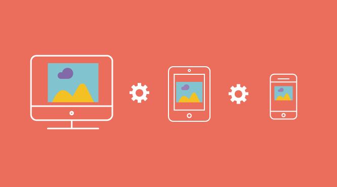

Bot Discord
Uma coisa que percebermos é como um bot de vendas automático ajuda nas vendas pode até parecer besteira mas quando um cliente ver algo assim inovador ele tende a comprar mais.

WebSite
O website gera de mais credibilidade As redes sociais movimentam a internet, utilizamos o smartphone o tempo todo para resolver problemas, se comunicar com outras pessoas e até mesmo fazer compras.
Designer
Uma das principais atribuições de um designer é a criação de marcas.A identidade visual constrói confiança, o que faz com que os consumidores voltem e comprem mais.